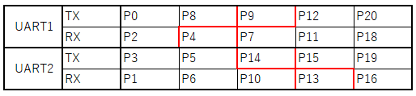

PIC32MX170F256B DIP Version2.0
language：
English
/
日本語
PIC32MX170F256B DIP Version2.0
UARTは下記表の通り設定変更可能です

※I2Cピンは基本的にその他の用途として使用できません(P7,P8)
使用可能Rubyコード：
クラス・メソッド一覧
基板データ：
URL
書き込み済みファームウェア：
github
電気的仕様
入力電圧：3.3V~12V(USB)
動作電圧：3.3V
もくじ
HOME
プログラム書き込み
mruby/c IDEインストール
PG書き込み
ファームウェアアップデート
アップデート手順
ボード一覧
ボード一覧
RBoardにおける各クラス
各クラス
mruby/c IO 各クラス
mruby/cIO標準化準拠クラス
サンプルプログラム
ADCサンプル
I2Cサンプル
PWMサンプル
UARTサンプル
その他サンプル
その他
対応センサーモジュール
ターミナルソフトの設定
チュートリアル
mruby/cとは？
LEDを制御する
フルカラーLED
ドア開閉センサ
圧電ブザー
光センサ
温度センサ
 UARTは下記表の通り設定変更可能です
UARTは下記表の通り設定変更可能です
UARTは下記表の通り設定変更可能です
UARTは下記表の通り設定変更可能です